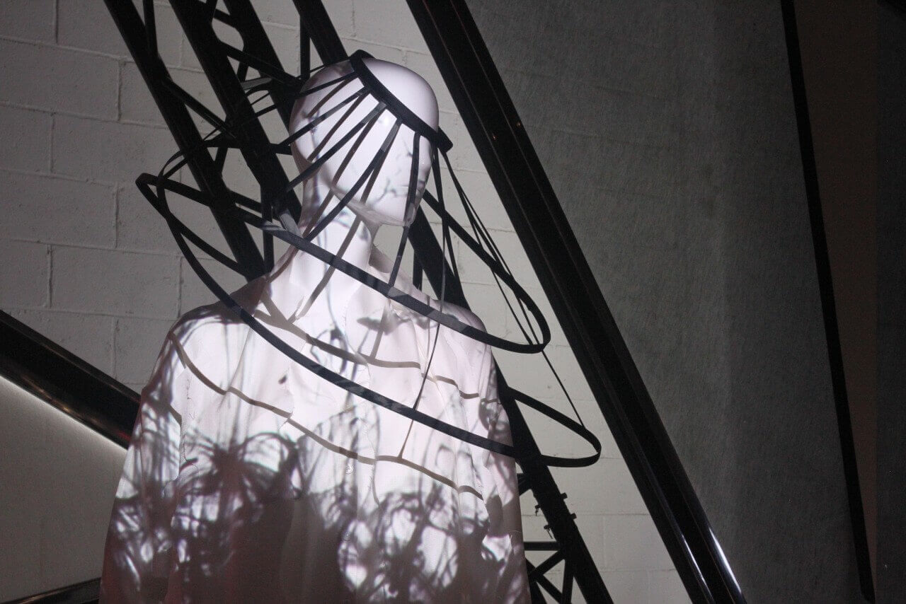

讀衣Ⅱ
當書法與時尚相遇

《讀衣Ⅱ》由藝術家董陽孜攜手六位設計師共同推出，於2017年10月21日在松山文創園區四號倉庫盛大開展。此次展覽將墨寶的濃淡乾濕結合時尚元素在服裝上呈現，並以黑、白、紅與一個設計師自選色為主題。（照片來源／吳佩芸攝）
MY ROLE
學生媒體《喀報》記者
SKILLS
Photography
TEAM
Individual
DURATION
Winter 2017, 1 week
陳邵彥設計師的《生》系列透過生活中的事物拉近人與服裝的關係，此作品的鑰匙圈元素即為一例。（照片來源／吳佩芸攝）

何善恒設計師結合投影效果與立體環形頭飾，巧妙地在服裝上呈現書法渲染之美。（照片來源／吳佩芸攝）
服裝上的羽毛為可活動裝置，觀展人靠近時，羽毛會拍動並發出鳥鳴聲，營造如同鳥群振翅撲來的氛圍。（照片來源／吳佩芸攝）
結合塑膠袋頭飾與潛水衣布料，生活也能如此時尚。（照片來源／吳佩芸攝）
《曲曲》系列的服裝，將書法放大輸出成布料，透過線條剪裁構成整體設計。（照片來源／吳佩芸攝）
牛仔布與電子紙技術的結合，使服裝在燈光照射下產生顏色漸變，創造與眾不同的觀展體驗。（照片來源／吳佩芸攝）
漂洗牛仔布後的漸層效果及裙擺的浮雕設計充滿張力。（照片來源／吳佩芸攝）
來自國外的觀展人拿著毛筆體驗傳統書法。（照片來源／吳佩芸攝）
觀展人留下充滿特色的墨跡。（照片來源／吳佩芸攝）
觀展人捕捉「人」與「線條」互動的畫面，創作出屬於自己的藝術作品。（照片來源／吳佩芸攝）